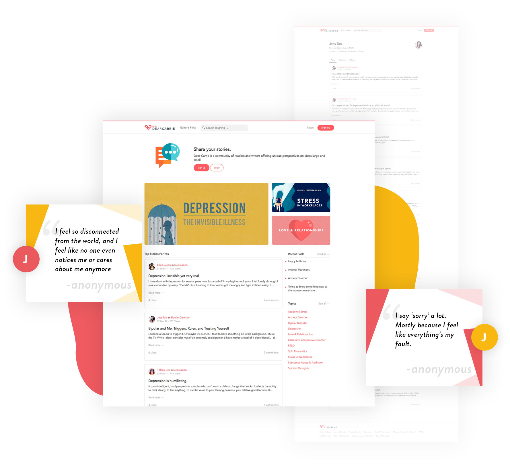

An online forum for mental health related topics

1 in 5 adults
Experience some form of mental health problem
50% do not seek professional help
people affected by mental health
Placing mental disorders among the leading cause of ill-health disability worldwide.
Millions of people suffer from mental health issues. Based on research done in the United States, statistics have shown that 1 in 5 adults experience some form of mental health problems. The number of people that suffer from these problems has risen over the past decade and is set to keep rising.
The name of the forum is called “Dear Carrie”. This name is to signify that every post is written to the system which is called Carrie as if you are sharing your problems to a friend. The name “Carrie” is used as it contains the word “Care” which is the intention of the forum, to care for people with mental-health related issues.
The logo of the forum is a combination of the alliteration of the name of the website. The alphabet “D” and “C” are titled 45 degrees are combined together to form a heart shape to show the “caring” side of the website. The figure below shows the creation and union of the logo.
Posts are categorised under topics. Search and follow topics that you care about.
Provides caretakers and families detailed information
about the problems to expect and tips to deal with them